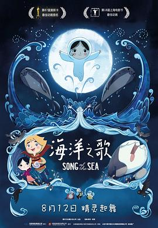

海洋之歌 / Song of the Sea
又名：海洋幻想曲(台) / Le Chant de la Mer
比较唯美，不过不是太喜欢~
作品信息
| 导演 | 汤姆·摩尔 |
| 编剧 | 汤姆·摩尔 / 威尔·柯林斯 |
| 主演 | 大卫·罗尔 / 布莱丹·格里森 / 丽莎·汉尼根 / 菲奥纽拉·弗拉纳根 / 露西·奥康奈尔 / 乔·肯尼 / 帕特·绍特 / 科姆·Ó·斯诺代格 / 利亚姆·霍里卡恩 / 凯文·斯耶斯卡斯 / 威尔·柯林斯 / 保罗·杨 |
| 类型 | 动画 / 奇幻 / 冒险 |
| 制片国家/地区 | 爱尔兰 / 丹麦 / 比利时 / 卢森堡 / 法国 |
| 语言 | 英语 / 爱尔兰语 / 苏格兰盖尔语 |
| 上映日期 | 2016-08-12(中国大陆) / 2014-09-06(多伦多电影节) / 2015-07-10(爱尔兰) |
| 片长 | 93分钟 / 94分钟(中国大陆) |
| IMDb | tt1865505 |
最后一次看到是 2026-08-01T11:06:35+10:00 · 豆瓣原页